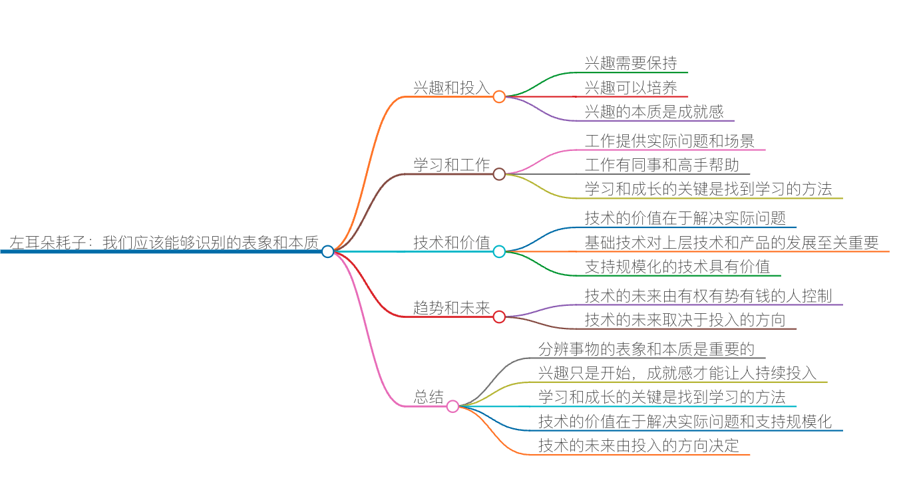

答疑解惑：我们应该能够识别的表象和本质

前两天，我以前在亚马逊（Amazon）团队的一个小伙伴从西雅图打来电话，和我主要聊了一下他最近的一些想法和动向。他在最近几个月面试了很多美国的本土公司，从大公司到创业公司都有，比如 Facebook、Snapchat、Oracle、微软、谷歌、Netflix、Uber 等。他今年 30 岁出头，到美国那边也有 3 年多时间了，所以想要多一些经历，到不同的公司看一下。
我觉得他这个想法挺好的。于是我们聊了一些对这些公司的看法，进而聊到他想要什么，感兴趣什么，想要经历什么，以及擅长什么，未来如何发展等话题……在两个多小时交谈的过程中，我们谈论到了一些关于他个人发展以及技术上的东西。他听我的建议后，说很有价值。于是，我想既然有价值，那么就把这些分享出来，供更多的人参考吧。
首先，我觉得在美国做技术真的比国内幸福好多，有那么多很不错的不同类别的公司可供选择。这与国内相比，选择空间实在是太大了，真是幸福。所以，在如此纷乱和多样化的地方，真是需要确定自己的发展方向和目标。不然就会像这个小伙儿一样，当 offer 像雪片一样飞过来的时候，却有点不知所措了。
我直接和他说，你现在不愁工作了，可以规划自己的职业生涯了，那么问题是你想走哪条路，对什么方向有兴趣，或是自己的长项是什么？结果，他说他也不知道，说就是想多看看多经历一些事情，也不知道自己最终会对什么事有兴趣，也不知道哪个方向更适合自己，可能再来个 5 年就能明确了。不过，他明确表示对前端技术不感兴趣。
我对他的这些思考没有任何异议，因为我觉得他的能力没有问题，我无非就是想和他说说我的一些认识和看法，希望可以帮他开阔开阔思路。我基本上是给了他如下的这些看法和观点。
关于兴趣和投入
兴趣是学习的助燃剂。对一件事有兴趣是是否愿意对这件事投入更多时间或者资源的前提条件。因此，找到自己的兴趣点的确是非常关键的。不过，我们也能看到下面几点。
一方面，兴趣是需要保持的。有的人对有的事就是三分钟的兴趣。刚开始兴趣十足，然而时间一长，兴趣因为各种原因不能保持，就会很快地“移情别恋”了。所以，不能持久的兴趣，或是一时兴起的兴趣，都无法让人投入下去。另一方面，兴趣其实也是可以培养出来的。我高考时，对计算机软件毫无兴趣，反而对物理世界里的很多东西感兴趣，比如无线电、原子能，或是飞行器之类的。但阴差阳错，我最终考了个计算机软件专业，然后发现，自己越来越喜欢编程了，于是就到了今天。
我发现，一个可以持久的兴趣，或是可以培养出来的兴趣，后面都有一个比较本质的东西，其实就是成就感，他是你坚持或者努力的最直接的正反馈。也就是说，兴趣只是开始，而能让人不断投入时间和精力的则是正反馈，是成就感。
带娃的父母可能对此比较好理解。比如，我家小孩 3 岁的时候，我买了一桶积木给她。她一开始只喜欢把积木胡乱堆放，没玩一会就对这种抽象的玩具失去了兴趣，去玩别的更形象的玩具去了。
于是，我就搭了一个小城堡给她看，她看完后兴趣就来了，也想自己搭一个。但是，不一会儿，她就受挫了，因为没有掌握好物体在构建时的平衡和支点的方法，所以搭出来的东西会倒。
我能看到，有时积木倒了之后，她会从中有一点点的学习总结，但更多的时候总结不出来。于是，我就上前帮她做调整，她很快就学会了，并且每一次都比上一次搭得更好……如此反复，最终，我家小孩玩积木上花的时间大大超过了其它的玩具，直到她无法从中得到成就感。
很显然，我把孩子从“天性喜欢破坏的兴趣点”上拉到了“喜欢创造的兴趣点”上。因为创造能带来更多的成就感，不是吗？
所以，我对这个朋友说，你对一件事的兴趣只是一种表象，而内在更多的是你做这件事的成就感是否可以持续。你需要找到让自己能够更有成就感的事情，兴趣总是可以培养的。
关于学习和工作
后面，我们又谈到了工作，他觉得只有找到与兴趣相匹配的工作才是能否学好一个技术的关键。对此，我给了他如下一些回应。
我觉得，学好一项技术和是否找到与之相匹配的工作有关联，但它们之间并不是强关联的。但之所以，我们都觉得通过工作才让我们学习和成长得更快，主要有这些原因。
- 工作能为我们带来相应的场景和实际的问题，而不是空泛的学习。带着问题去学习，带着场景去解决问题，的确是一种高效的学习方式。
- 在工作当中，有同事和高手帮助。和他们的交互和讨论，可以让你更快地学习和成长。
本质上来说，并不是只有找到了相应的工作我们才可以学好一项技术，而是，我们在通过解决实际问题，在和他人讨论，获得高手帮助的环境中，才能更快更有效率地学习和成长。
有时候，在工作中你反而学不到东西，那是因为你找的这个工作能够提供的场景不够丰富，需要解决的实际问题太过简单，以及你的同事对你的帮助不大。这时，这个工作反而限制了你的学习和成长。
所以，我给了这个小伙子两点建议。
- 找工作不只是找用这个技术的工作，更是要找场景，找实际问题，找团队。这些才是本质。一项技术很多公司都在用，然而，只有进入到有更多的场景、有挑战性的问题、有靠谱团队的公司，才对学习和成长更有帮助。
- 不要完全把自己的学习寄希望于找一份工作，才会学得好。我给他的建议是，在一些开源社区内，有助于学习的场景会更多，要解决的实际问题也更多，同时你能接触到的牛人也更多。特别是一些有大量公司和几万、几十万甚至上百万的开发人员在贡献代码的项目，我认为可以让人成长很快。
我入行前十年并没有生活在一个开源软件爆发的年代，也没有生活在一个场景像今天这么丰富的年代，所以也走了很多弯路。不过，比较幸运的是，我还是在一些关键时期找到了靠谱的工作，为我带来了一般人看不到的实际问题，也为我提供了很不错的团队和实际场景。
今天的年轻人有比我更好的环境和条件，应该能比我成长得更好、更快。当然，和我的成长一样，都需要小心地鉴别和甄选。
总之，找到学习的方法，提升自己对新事物学习的能力，才是学习和成长的关键。
关于技术和价值
后面，我们又聊到了什么样的技术会是属于未来的技术，以及应该把时间花在什么样的技术上。我问了他这样一个问题：“你觉得，让人登月探索宇宙的技术价值大，还是造高铁的技术价值大？或者是科学种田的技术价值大？……”
是的，对于这个问题，从不同的角度上看，就会得到不同的结论。似乎，我们无法说明白哪项技术创造的价值更大，因为完全没法比较。
于是我又说了一个例子，在第一次工业革命的时候，也就是蒸汽机时代，除了蒸汽机之外还有其它一些技术含量更高的技术，比如化学、冶金、水泥、玻璃……但是，这么一个不起眼的技术引发了人类社会的变革。也许，那个时候，在技术圈中，很多技术专家还鄙视蒸汽机的技术含量太低呢。
我并不是想说高大上的技术无用，我想说的是，技术无贵贱，很多伟大的事就是通过一些不起眼的技术造就的。所以，我们应该关注的是：
- 要用技术解决什么样的问题，场景非常重要；
- 如何降低技术的学习成本，提高易用性，从而可以让技术更为普及。
另外，我又说了一个例子。假设，我们今天没有电，忽然，有人说他发明了电。我相信，这个世界上的很多人都会觉得“电”这个东西没什么用，而只有等到“电灯”的发明，人们才明白发明“电”是多么牛。
所以，对于一些“基础技术”来说，通常会在某段时间内会被人类社会低估。就像国内前几年低估“云计算”技术一样。基础技术就像是创新的引擎，其不断地成熟和完善会引发更上层的技术不断地衍生，越滚越大。
而在一个基础技术被广泛应用的过程中，如何规模化也会成为一个关键。这就好像发电厂一样，没有发电厂，电力就无法做到规模化。记得汽车发明的时候，要组装一个汽车的时间成本、人力成本、物力成本都非常高，所以完全无法做到规模化，而通过模块化分工、自动化生产等技术手段才释放了产能，从而普及。
所以，我个人觉得一项有价值的技术，并不在于这项技术是否有技术含量，而是在于：
- 能否低成本高效率地解决实际问题；
- 是不是众多产品的基础技术；
- 是不是可以支持规模化的技术。
对于我们搞计算机软件的人来说，也可以找到相对应的技术点。比如：
- 低成本高效率地解决实际问题的技术，一定是自动化的技术。软件天生就是用来完成重复劳动的，天生就是用来做自动化的。而未来的 AI 和 IoT 也是在拼命数字化和自动化还没有自动化的领域。
- 基础技术总是枯燥和有价值的。数学、算法、网络、存储等基础技术吃得越透，就越容易服务上层的各种衍生技术或产品。
- 支持规模化的技术也是很有价值的。在软件行业中，也就是 PaaS 的相关技术。
当然，我的意思并不是别的技术都没有价值了。重申一下，技术无贵贱。我只是想说，能规模化低成本高效率解决实际问题的技术及其基础技术，就算是很 low，也是很有价值的。
关于趋势和未来
好像每次跟人聊天的时候都会扯到这个事上来。老实说，真的没人可以预测未来会是什么样的。不过，似乎有些规律也是有迹可循的。
我一直认为，这个世界的技术趋势和未来其实是被人控制的。就是被那些有权有势有钱的公司或国家来控制的。当然，他们控制的不是长期的未来，但短期的未来（3-5 年）一定是他们控制着的。
也就是说，技术的未来要去哪，主要是看这个世界的投入会到哪。基本上就是这个世界上的有钱有势的人把财富投到哪个领域，也就是这个世界的大公司或大国们的规划。
一旦他们把大量的金钱投到某个领域，这个领域就会得到发展，那么发展之后，这个领域也就成为未来了。只要是有一堆公司在往一个方向上不间断地投资或者花钱，这个方向不想成为未来似乎都不可能。
听上去多少有点儿令人沮丧，但我个人觉得世界就是如此简单粗暴运作着的。
所以，对于我们这些在这个世界里排不上号的人来说，只能默默地跟随着这些大公司所引领的趋势和未来。对一些缺钱缺人的创业公司，唯一能够做的，也许只是两条路，一是用更为低的成本来提供和大公司相应的技术，另一条路是在细分垂直市场上做得比大公司更专更精。等着自己有一天长大后，也能加入第一梯队从而“引领”未来。
小结
今天的这个主题，我其实观察和酝酿了很久，正好结合跟这位小伙伴的交流，总结整理出来。在我们的生活和工作中，总是会有很多人混淆一些看似有联系，实则关系不大的词和概念，分辨不清事物的表象和本质。
比如文中提到的兴趣和投入。表面上，兴趣是决定一件事儿能否做持久的关键因素。而反观我们自己和他人的经历不难发现，兴趣扮演的角色通常是敲门砖，它引发我们关注到某事某物。而真正能让我们坚持下去的，实际上是做一件事之后从中收获到的正反馈，也就是成就感。
同样，人们也经常搞错学习和工作之间的关系。多数人都会认为，在工作中学习和成长速度更快。而仔细观察下来，你会发现，工作不过是提供了一个能够解决实际问题，能跟人讨论，有高手帮助的环境。
所以说，让我们成长的并不是工作本身，而是有利于学习的环境。也就是说，如果我们想学习，除了可以选择有助于学习的工作机会，开源社区提供的环境同样有助于我们的学习和提高，那里高手更多，实际问题不少。
还有，技术和价值。人们通常认为技术含量高的技术其价值会更高，而历史上无数的事实却告诉我们，能规模化、低成本、高效率地解决实际问题的技术及其基础技术，才发挥出了更为深远的影响，甚至其价值更是颠覆性的，难以估量。
趋势和未来也是被误解得很深的一对“孪生兄弟”。虽然大家通常会认为有什么样的技术趋势，必然带来什么样的未来。殊不知，所谓的趋势和未来，其实都是可以人为控制的，特别是那些有钱有势的人和公司。也就是，社会的资金和资源流向什么领域，这个领域势必会得到成长和发展，会逐渐形成趋势，进而成为未来。我们遵循这样的规律，就能很容易地判断出未来的，最起码是近几年的，技术流向了。
再如，加班和产出，努力和成功，速度和效率……加班等于高产出吗？显然不是。很努力就一定会成功吗？当然不是。速度快就是效率高吗？更加不是。可以枚举的还有很多，如干得多就等于干得好吗？等等。
学完这一节课，你是不是不再混淆一些现象和本质，是不是能将一些事情看得更加清晰了呢？欢迎来跟我交流。